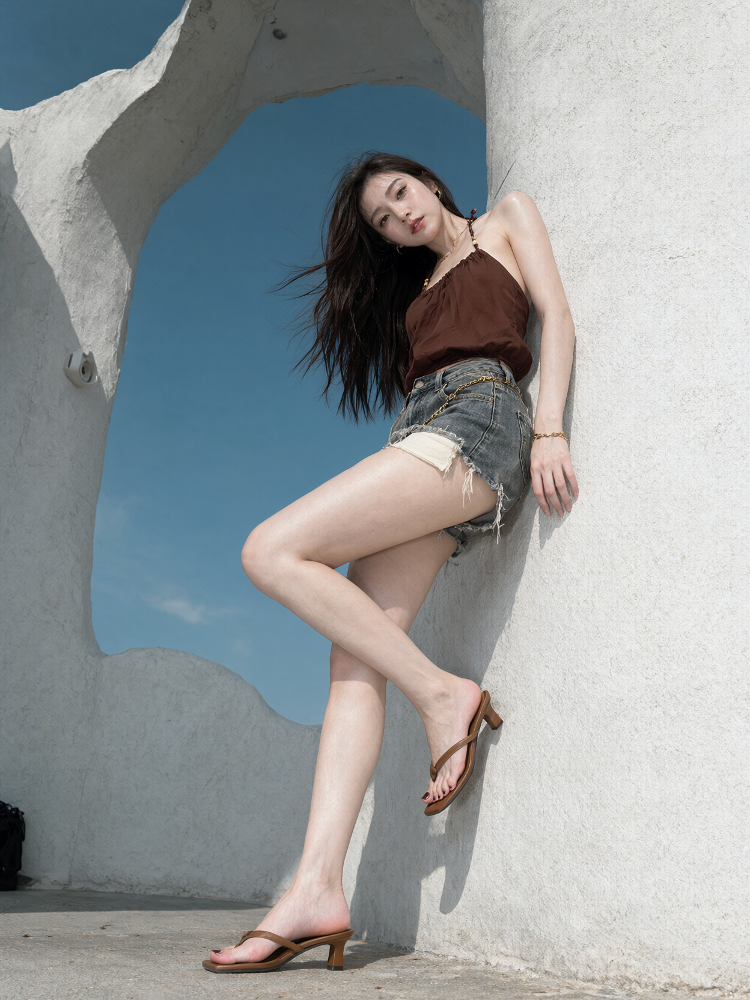

04 低位全身 · 倚墙站姿
一张晴天户外的写实时尚全身人像照片，一位25岁的成年女性倚靠在白色雕塑式建筑的右侧墙面上，建筑中间的不规则拱形开口露出大片深蓝色天空。
竖向构图，相机接近地面，向上仰拍，拍摄距离足以完整纳入人物头顶、双脚与周围建筑。人物集中在画面右半侧，头部位于右上方，腰臀靠近右侧墙面，落地腿斜向下方中央延伸。左侧与中央保留大面积蓝天，粗糙白色建筑从左侧、顶部和右侧围绕天空形成不规则框景。头顶上方和鞋子下方均留有空间。
她的上背和臀侧贴近右侧白墙，身体放松倚靠，头部轻轻向画面左侧倾斜，脸转向镜头，双眼直视镜头。画面前侧的一条腿向下伸展，膝盖接近伸直，小腿沿右上至左下的斜线延伸，脚掌与鞋跟落在地面上，形成修长的支撑腿。另一条腿抬起并屈膝，膝盖向画面左侧打开，大腿斜向左下方，小腿再折向右下方，脚位于支撑腿后方、右侧墙面前，脚尖自然向下。抬起的脚明显高于落地脚，两条腿在膝盖以下形成前后交叠。
画面右侧的手臂沿墙面自然下垂，手腕低于臀部，手指松弛微弯。另一侧手臂被躯干和长发部分遮挡。肩臂纤细，腰部收窄，大腿轮廓饱满，落地腿在低机位下呈自然拉长的视觉效果。
她的皮肤白皙、白里透红，浅白底色中透出柔和粉色。面部、肩膀、胸前、手臂与双腿保持一致的白皙肤色，脸颊、肩头、膝盖和脚趾自然泛着浅粉红血色。额头、颧骨、鼻梁、锁骨和腿部受光面出现明亮的细碎反光，高光接近白色，中间调清透偏粉，阴影呈浅淡粉灰色，保留真实皮肤纹理。
她有自然眉形、清晰睫毛与淡暖棕色眼妆，玫瑰豆沙色嘴唇微张，神情平静。浓密的深棕近黑长发垂在画面左侧肩胸前，风将外层发丝吹向左侧蓝天，形成横向飘动的细线。
她穿着低饱和深红棕色挂脖上衣，细绳绕向颈后，胸前上缘有细密抽褶，布料覆盖至腰部，并在腹部形成柔软褶皱。挂脖细绳上带有米黄色与深色小珠装饰。 下身是灰蓝色水洗牛仔短裤，前侧可见金属纽扣与口袋结构，裤脚有明显破损、毛边和垂落的浅色纱线。 两侧裤脚下方露出浅米白色口袋内衬布片，右侧布片更明显，覆盖大腿根部的一小块区域。 腰部佩戴金色圆环链条，链条沿短裤前侧斜向垂挂。 耳边佩戴金色圈形耳环，颈部有细金项链，垂下的手腕戴细金链手镯。 双脚穿焦糖棕色夹趾高跟凉鞋，脚背前方细带交叉，后跟敞开，鞋跟为窄方柱形。落地鞋完整呈现在画面下方中央，抬起的鞋位于右侧中下部。脚趾涂深酒红色指甲油。
白色建筑具有厚重的弧形墙体、起伏边沿和不规则拱形开口，表面保留粗糙砂粒纹理。顶部拱面向画面内伸出，内侧嵌有小圆形灯具。左侧开口边缘挂着一只小型白色设备，地面左下角露出黑色包的一角。
晴天日光从高处斜向照射，人物肩头、脸部与长腿出现清晰亮面，身体和鞋子在墙面与地面上投下边缘明确的阴影。受光墙面呈冷白色，阴影偏蓝灰。天空为偏青的深蓝色，顶部较深，下方略浅。灰白地面有细小磨损和浅褐色斑点。人物、建筑纹理和发丝均清晰可辨，整体色彩克制，保留自然数码摄影质感。